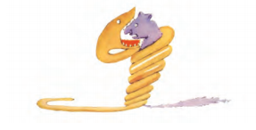

Poglavlje 1
Jednom, kada mi je bilo šest godina, video sam čudesnu sliku u nekoj knjizi o prašumi. Knjiga se zvala „Istinite priče”. Slika je predstavljala zmijskog cara koji se sprema da proguta neku zver. Evo kako je izgledao taj crtež.

U knjizi je pisalo: „Zmijski car guta svoj plen bez žvakanja. Posle toga ne može da mrdne, i spava šest meseci dok ga ne svari”.